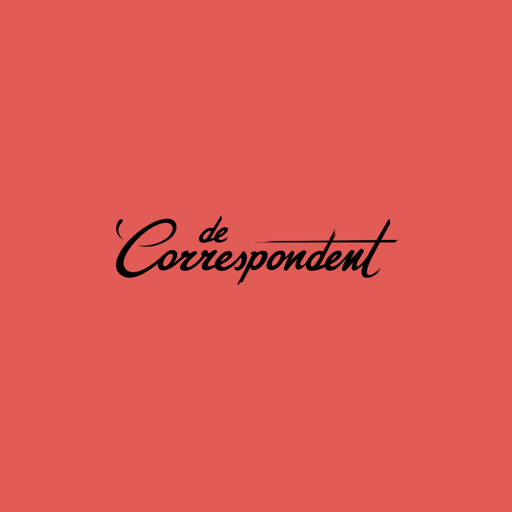
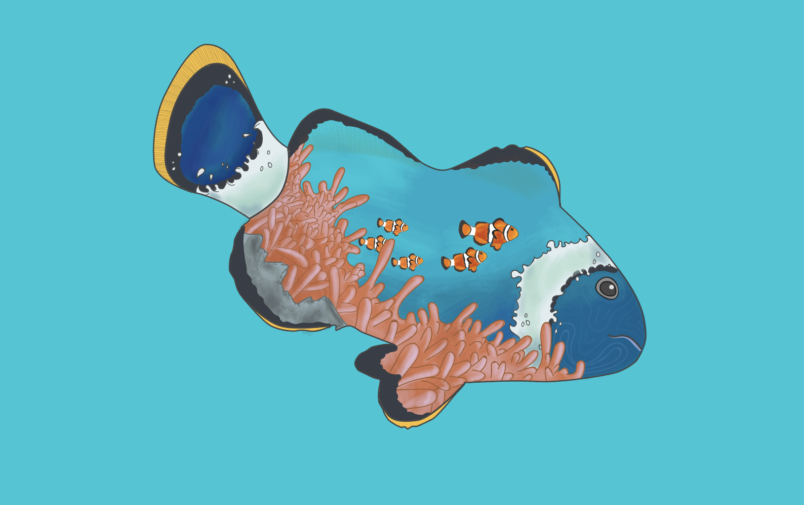
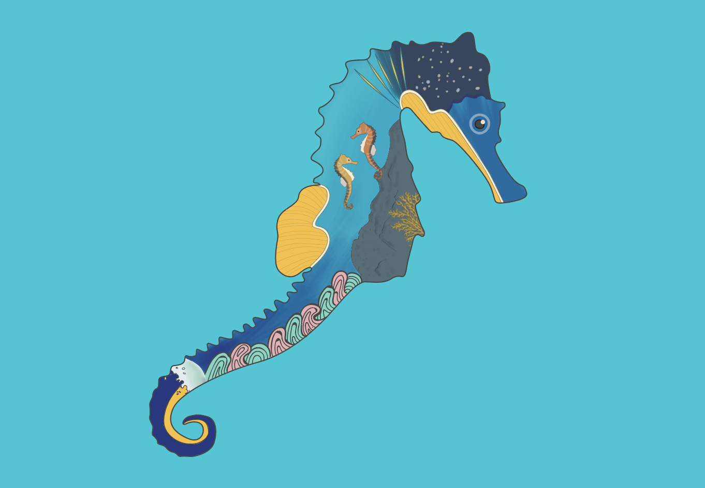
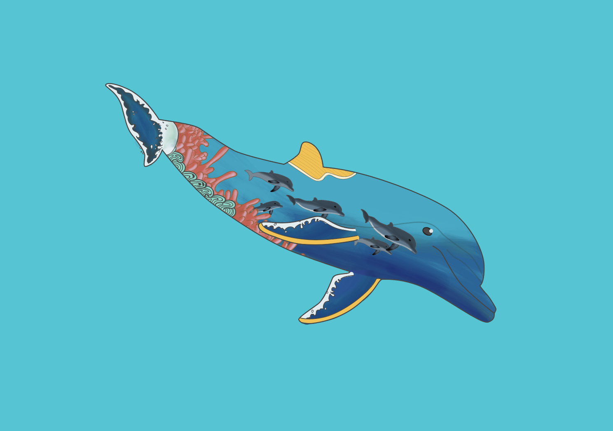

De meesterproef was de laatste opdracht van de minor. Je mocht zelf een artikel / onderwerp uitkiezen en hier een visuele interface van maken.
Bekijk website

Het onderwerp
Ik heb gekozen voor een artikel uit de Correspondent: 'Echt vrije seks vind je ver beneden peil'. Dit is geschreven tijdens de pride.
Ik heb voor dit artikel gekozen omdat ik het een heel interessant artikel vond, bovendien zag ik al gelijk voor me hoe dit eruit zou zien. Ik heb gebruik gemaakt van de regenboog kleuren en veel illustraties.
Illustraties
Voor deze opdracht heb ik veel geillustreerd. Ik heb ervoor gekozen om alle dieren als een soort 'double exposure' te tekenen, dit zag ik op Pinterest en ik was gelijk fan.


